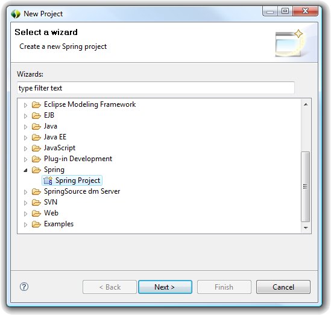

There are two entry points to creating a new Spring project:

This will invoke a new project wizard that will help step you through the wizard creation process. Select a name for the project and hit the finish button. A new Spring project will be created for you.